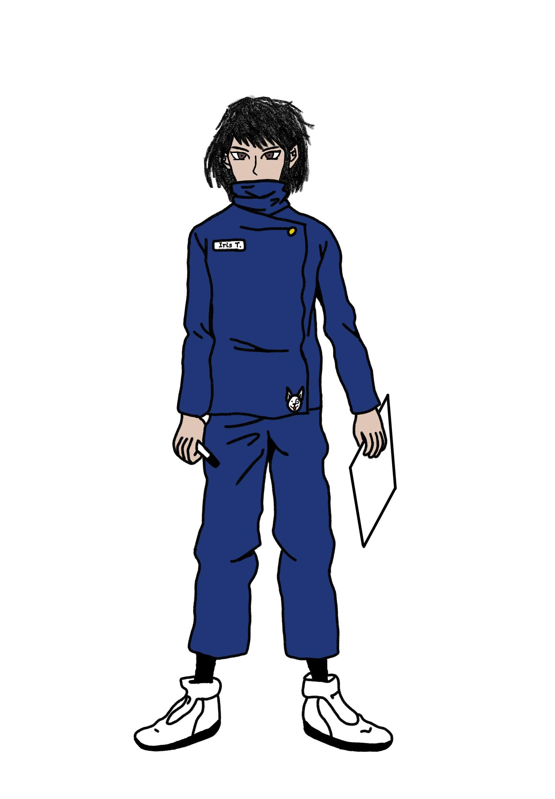

Character Showcase Deck
Hovering on any character profile card below to flip it and review their details.

Iris Tang
Jujutsu N Dragons Series
Appearance:
Hair color: Black
Eye color: Brown
Height: 5”2
Skin color: Yellow-ish
Gender: Female
Background:
Born not being able to speak, at a young age was despised and isolated by parents, was only given a drawing board & markers. One day accidentally used her curse technique on the family dog. So her parents sent her to the worse public school they could find.
Personality:
Shy and introverted. With antisocial tendencies.
Languages:
English, Asian (unspecific which Asian language)
Stats:
| Max HP: | 26 |
| Armor Class: | 1d4 + 2 |
| Max Curse Energy: | 6 |
| Base Movement: | 30ft |
| Max Carry Weight: | 120 |
Equipment:
- School Uniform (Armor)
- G4 Dagger (M. Hand)
- G4 Baton (M. Hand)
- G4 Shuriken (Ranged)
- G4 Scythe (M. Hand)
Skills:
Passives
Anatomical Severance
Cursed Regeneration
Heavenly Pact
Dominion Drawing
Aptitudes
Black Flash
Barrier
Shikigami
Masteries
Scythe Mastery
Martial Arts
Finnese Technique: Adjust
Offensive Technique: Prepare
Abilities
Meditate
Severance
Canvas Expansion
Natural Actions
Curse Energy Reinforcement
Curse Energy Attacks
Reserve Energy
Special Actions
Shikitgami Action